Thank you very much for purchasing our item.
If you have any issue or question that this document does not cover, you can contact us via profile page here. Thanks so much!
Table of Contents
1. Theme Version
Version number: 1.1.2
Date of release: 12/11/2014
2. Change Logs
12/11/2014 v1.1.2
==> Fixed miss feature for some redefine style
10/30/2014 v1.1.1
==> Add Full-screen Image support
10/21/2014 v1.1.0
==> Compatible with Ghost 0.5.x
==> Add Upper-case mode options
==> Add Image Cover support for Audio Post format
==> Optimize Audio Post Format
==> Optimize Video Post Format
==> Optimize UI
= 08/13/2014 v1.0.0
==> Initial Release 1.0.0
3. Install
3.1: Unzip the main file you've downloaded from themeforest.net
3.2: Select version:
- Default version: select folder theme/default/goblin
- Redefine style 1 (demo 1): select folder theme/redefined/style1/goblin
- Redefine style 2 (demo 2): select folder theme/redefined/style2/goblin
- Redefine style 3 (demo 3): select folder theme/redefined/style3/goblin
- Redefine style 4 (demo 4): select folder theme/redefined/style4/goblin
3.3: Install Theme
3.3.1 Intall for Ghost Hosted
-
Zip the goblin folder that you selected from 3.2
-
Sign in on ghost.org and go to Blog Settings
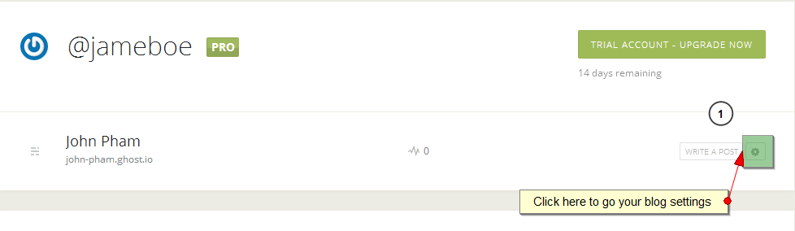
-
Upload goblin zip file to your hosted control panel.

3.3.2 Install for Other Host
-
Upload the goblin folder that you selected from 3.2 to content/themes/ on ghost hosting folder.
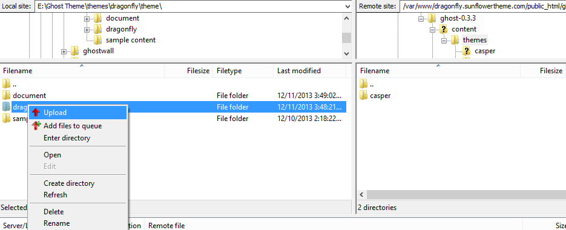
-
Restart the service of ghost.
-
Login to your Ghost admin, click on the settings options. Select your Theme name in the 'Theme' options dropdown, save it and you are set up with the theme now. Enjoy!

4. Import Demo Content
We're recommending you import demo content to know how it works.
-
Login to your Ghost Admin Dashboard
-
Go to url your_site_url/ghost/debug
-
At Import section, click Choose File and browse to YOUR_EXTRACT_THEME_FOLDER>demo-data select goblin.ghost.demo.json and click Import button
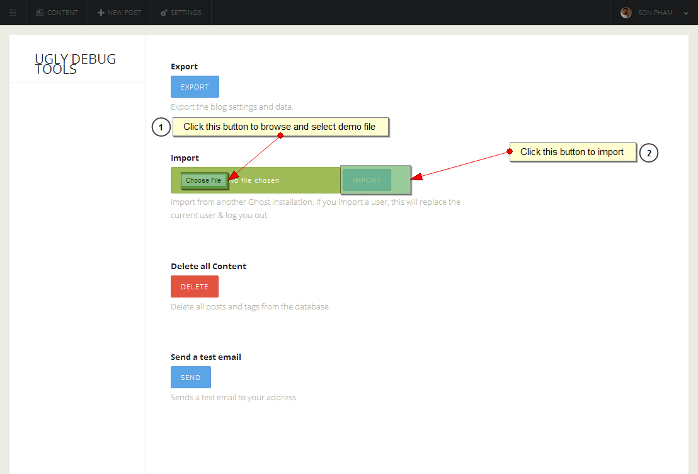
5. Setting Up The Theme
You can set the Goblin theme of change some variable in theme file. First of all, you'll need a text editor to open and edit it.
If you have a PC and use Windows, you can install and use Notepad++, the most basic text editor on your computer.
If you have a Mac with OS X, you can use TextEdit.
After you're done, you need re-upload file changes to your server.
5.1 Change Theme color
Goblin include 18 redefined colors, if you would like to change the color for the theme please follow the steps below.
-
open file default.hbs
-
On line 48, you will see it like:
<link rel="stylesheet" type="text/css" href="{{asset "css/style.css"}}" /> <link rel="stylesheet" type="text/css" href="{{asset "css/colors/default.css"}}" /> {{! Change color scheme here }}Take a note of the text css/colors/default.css. Change default.css to color file name that you want.
Color file name includes:- default.css
- blue.css
- corporate-blue.css
- dark-slate-gray.css
- darkcyan.css
- dodger-blue.css
- golden-rod.css
- green.css
- hot-pink.css
- indian-red.css
- medium-violet-red.css
- muted-teal.css
- orange.css
- purple.css
- red.css
- sea-green.css
- soft-green.css
- yellow.css
Example: I want to use green color, so i made change it to css/colors/green.css
<link rel="stylesheet" type="text/css" href="{{asset "css/style.css"}}" /> <link rel="stylesheet" type="text/css" href="{{asset "css/colors/green.css"}}" /> {{! Change color scheme here }}
5.2 Change Font
We are using the google web font, if you would like to change the font for the theme please follow the steps below.
-
Open file default.hbs
On line 41 you will see it like:
<meta name="google-site-verification" content=""> {{! Change for Google Webmaster verification }} <link href='http://fonts.googleapis.com/css?family=Open+Sans:400italic,700italic,400,700' rel='stylesheet' type='text/css'> {{! Change google font here }} <link rel="stylesheet" type="text/css" href="{{asset "css/bootstrap.min.css"}}" />Replace line 41 to YOUR GOOGLE FONT LINK
-
Open file assets/css/style.css
On line 26 and line 42 you will see it like:
*, body { font-family: 'Open Sans', sans-serif; color: #302A2B; font-size: 18px; font-weight: 400; line-height: 38px; -webkit-font-smoothing: antialiased; margin: 0; padding: 0; } body{ background-color: #fff; } body[data-site-layout="boxed"]{ background-color: #e3eaf0; } h1, h2, h3, h4, h5, h6, .h1, .h2, .h3, .h4, .h5, .h6 { font-family: 'Open Sans', sans-serif; font-weight: 700; line-height: 1.5; }Replace line 26 and 42 to YOUR GOOGLE FONT FAMILY
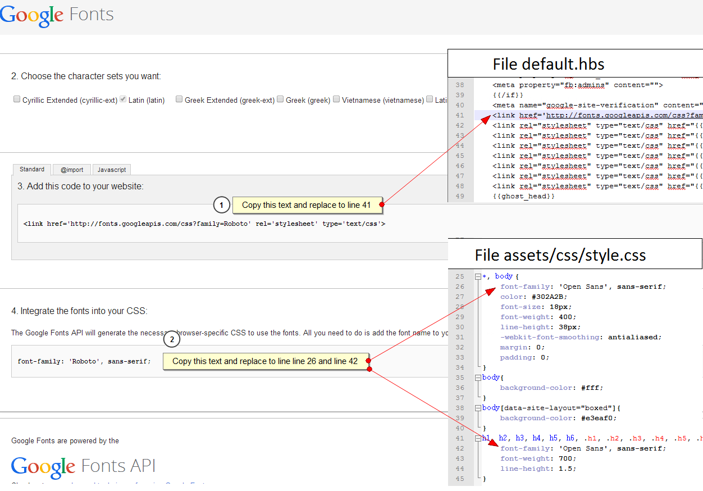
5.3 Change site layout
Goblin support boxed and wide layout, please follow the steps below to change your site layout
-
Open file default.hbs
-
On line 54 you will see a text line this: data-site-layout="wide". You can change it to data-site-layout="boxed" and vice versa.
5.4 Change Post List Mode
Goblin support Multimedia Mode and Plain Text Mode, please follow the steps below to change it for your site
-
Open file default.hbs
-
On line 55 you will see a text line this: data-post-mode="multimedia". You can change it to data-post-mode="plain" and vice versa.
5.5 Change Post List Align
Goblin support Left Align and Center Align, please follow the steps below to change it for your site
-
Open file default.hbs
-
On line 56 you will see a text line this: data-post-align="left". You can change it to data-post-align="center" and vice versa.
5.6 Change & setting header
Goblin support 4 header style includes: standard, full-screen, full-screen-center-logo and mini for customize, please follow the steps below to change it for your site.
-
Open file default.hbs
-
On line 91 you will see a text line this: {{>header/standard}}. You can change it to:
{{>header/full-screen}}
OR
{{>header/full-screen-center-logo}}
OR
{{>header/mini}} -
Next, with each header you have some variable to setting it like: layout, sticky, color scheme and direction, please follow the steps below to change it for your site.
-
Open file partials/header/header_that_you_select_above.hbs
Example: If you select header is full-screen-center-logo then open file partials/header/full-screen-center-logo.hbs
-
From lines 2-5 you will see a text like:
data-layout="wide" {{!Header layout option: change it to 'default' or 'wide'}} data-sticky="true" {{!Sticky Header option: change it to 'true' or 'false'}} data-color-scheme="light" {{!Header Color Scheme option: change it to 'dark' or 'light'}} data-direction="default" {{!Header Direction option: change it to 'default' or 'inverse'}} -
You can change values in each variable as the right instructions
Example: I want to use default layout and disable sticky for my header, i'll change it like this (Take a note of line 2 and 3):
data-layout="default" {{!Header layout option: change it to 'default' or 'wide'}} data-sticky="false" {{!Sticky Header option: change it to 'true' or 'false'}} data-color-scheme="light" {{!Header Color Scheme option: change it to 'dark' or 'light'}} data-direction="default" {{!Header Direction option: change it to 'default' or 'inverse'}}
-
-
Finally, you may need to change site logo. By default the theme will be use Blog Title for logo. You can upload logo image for your site on Ghost Admin Dashboard > Settings
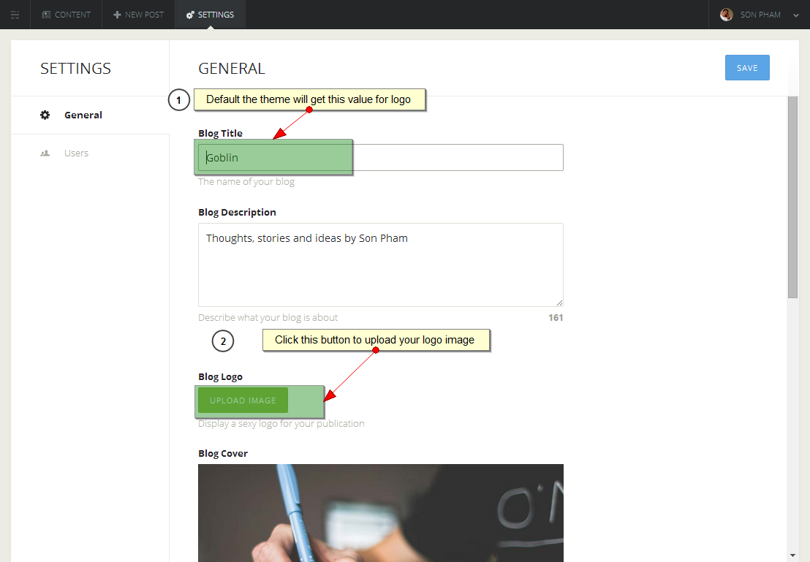
Note: With sticky menu the theme support 2 status logo: normal (logo display on intro screen) and sticked (logo display when user scroll down).
To apply sticked, please open file partials/header/header_that_you_select_above.hbs
On line 12 you will see a text like this: data-sticked-src="". Change it to data-sticked-src="URL_OF_STICKED_LOGO"
Example: data-sticked-src="{{@blog.url}}/content/images/2014/Aug/sticked-logo.png"
5.7 Change & Setting Intro Screen
Goblin support 4 intro screen style includes: left-style, personal, right-style and standard for customize, please follow the steps below to change it for your site.
-
Open file index.hbs
-
On line 8 you will see a text line this: {{>intro/left-style}}. You can change it to:
{{>intro/personal}}
OR
{{>intro/right-style}}
OR
{{>intro/standard}} -
Next, with each intro screen you have a variable to setting more button style, please follow the steps below to change it for your site.
-
Open file partials/intro/intro_screen_that_you_select_above.hbs
Example: If you select intro screen is personal then open file partials/intro/personal.hbs
-
On line 2 you will see a text like:
data-more-button-style="icon-and-text" {{!More detail button option: change it to 'icon-and-text' or 'button-only' or 'icon-only'}} -
You can change value in it as the right instructions
Example: I want to show button only for my intro screen, i'll change it like this:
data-more-button-style="button-only" {{!More detail button option: change it to 'icon-and-text' or 'button-only' or 'icon-only'}}
-
5.8 Change & Setting Footer
Goblin support 3 Footer style include: one-column, two-columns and three-columns for customize, please follow the steps below to change it for your site.
-
Open file default.hbs
-
On line 100 you will see a text line this: {{>footer/three-columns}}. You can change it to:
{{>footer/one-column}}
OR
{{>footer/two-columns}} -
Next, with each footer you have a variable to setting layout style, please follow the steps below to change it for your site.
-
Open file partials/footer/footer_that_you_select_above.hbs
Example: If you select footer is two-columns then open file partials/footer/two-columns.hbs
-
On line 2 you will see a text like:
data-layout="wide" {{!Footer layout option: change it to default or wide}} -
You can change value in it as the right instructions
Example: I want to use default layout for my footer, i'll change it like this:
data-layout="default" {{!Footer layout option: change it to default or wide}}
-
5.9 Change Social Network Icons
In this section you can change Social Network Icons on the Header, Personal Intro Screen and Footer
File: partials/social-icons.hbs
{{!Begin of Social Icon List}}
<ul class="social">
{{!Begin Social item}}
<li class="google">
<a href="#" target="_blank" title="Google"> {{!Change href="#" to href="YOUR_SOCIAL_URL"}}
<i class="fa fa-google-plus"></i>
</a>
</li>
{{!End Social item}}
{{!Begin Social item}}
<li class="twitter">
<a href="#" target="_blank" title="Twitter"> {{!Change href="#" to href="YOUR_SOCIAL_URL"}}
<i class="fa fa-twitter"></i>
</a>
</li>
{{!End Social item}}
{{!Begin Social item}}
<li class="facebook">
<a href="#" target="_blank" title="Facebook"> {{!Change href="#" to href="YOUR_SOCIAL_URL"}}
<i class="fa fa-facebook"></i>
</a>
</li>
{{!End Social item}}
{{!Add New Social item here}}
</ul>
{{!End of Social Icon List}}
What you need is change href value to your social url, you can also copy new social icon in the list below and paste it to line 27
Here full list of social icons that the theme support:
-
Facebook
<li class="facebook"> <a href="#" target="_blank" title="Facebook"> {{!Change href="#" to href="YOUR_SOCIAL_URL"}} <i class="fa fa-facebook"></i> {{!Change icon for social item here}} </a> </li> -
Twitter
<li class="twitter"> <a href="#" target="_blank" title="Twitter"> {{!Change href="#" to href="YOUR_SOCIAL_URL"}} <i class="fa fa-twitter"></i> {{!Change icon for social item here}} </a> </li> -
Google Plus
<li class="google"> <a href="#" target="_blank" title="Google"> {{!Change href="#" to href="YOUR_SOCIAL_URL"}} <i class="fa fa-google-plus"></i> {{!Change icon for social item here}} </a> </li> -
LinkedIn
<li class="linkedin"> <a href="#" target="_blank" title="linkedin"> {{!Change href="#" to href="YOUR_SOCIAL_URL"}} <i class="fa fa-linkedin"></i> {{!Change icon for social item here}} </a> </li> -
vkontakte
<li class="vkontakte"> <a href="#" target="_blank" title="vkontakte"> {{!Change href="#" to href="YOUR_SOCIAL_URL"}} <i class="fa fa-vk"></i> {{!Change icon for social item here}} </a> </li> -
xing
<li class="xing"> <a href="#" target="_blank" title="xing"> {{!Change href="#" to href="YOUR_SOCIAL_URL"}} <i class="fa fa-xing"></i> {{!Change icon for social item here}} </a> </li> -
skype
<li class="skype"> <a href="#" target="_blank" title="skype"> {{!Change href="#" to href="YOUR_SOCIAL_URL"}} <i class="fa fa-skype"></i> {{!Change icon for social item here}} </a> </li> -
yahoo
<li class="yahoo"> <a href="#" target="_blank" title="yahoo"> {{!Change href="#" to href="YOUR_SOCIAL_URL"}} <i class="fa fa-yahoo"></i> {{!Change icon for social item here}} </a> </li> -
flickr
<li class="flickr"> <a href="#" target="_blank" title="flickr"> {{!Change href="#" to href="YOUR_SOCIAL_URL"}} <i class="fa fa-flickr"></i> {{!Change icon for social item here}} </a> </li> -
instagram
<li class="instagram"> <a href="#" target="_blank" title="instagram"> {{!Change href="#" to href="YOUR_SOCIAL_URL"}} <i class="fa fa-instagram"></i> {{!Change icon for social item here}} </a> </li> -
behance
<li class="behance"> <a href="#" target="_blank" title="behance"> {{!Change href="#" to href="YOUR_SOCIAL_URL"}} <i class="fa fa-behance"></i> {{!Change icon for social item here}} </a> </li> -
dribbble
<li class="dribbble"> <a href="#" target="_blank" title="dribbble"> {{!Change href="#" to href="YOUR_SOCIAL_URL"}} <i class="fa fa-dribbble"></i> {{!Change icon for social item here}} </a> </li> -
pinterest
<li class="pinterest"> <a href="#" target="_blank" title="pinterest"> {{!Change href="#" to href="YOUR_SOCIAL_URL"}} <i class="fa fa-pinterest"></i> {{!Change icon for social item here}} </a> </li> -
deviantart
<li class="deviantart"> <a href="#" target="_blank" title="deviantart"> {{!Change href="#" to href="YOUR_SOCIAL_URL"}} <i class="fa fa-deviantart"></i> {{!Change icon for social item here}} </a> </li> -
youtube
<li class="youtube"> <a href="#" target="_blank" title="youtube"> {{!Change href="#" to href="YOUR_SOCIAL_URL"}} <i class="fa fa-youtube"></i> {{!Change icon for social item here}} </a> </li> -
vimeo
<li class="vimeo"> <a href="#" target="_blank" title="vimeo"> {{!Change href="#" to href="YOUR_SOCIAL_URL"}} <i class="fa fa-vimeo"></i> {{!Change icon for social item here}} </a> </li> -
soundcloud
<li class="soundcloud"> <a href="#" target="_blank" title="soundcloud"> {{!Change href="#" to href="YOUR_SOCIAL_URL"}} <i class="fa fa-soundcloud"></i> {{!Change icon for social item here}} </a> </li> -
spotify
<li class="spotify"> <a href="#" target="_blank" title="spotify"> {{!Change href="#" to href="YOUR_SOCIAL_URL"}} <i class="fa fa-spotify"></i> {{!Change icon for social item here}} </a> </li> -
wordpress
<li class="wordpress"> <a href="#" target="_blank" title="wordpress"> {{!Change href="#" to href="YOUR_SOCIAL_URL"}} <i class="fa fa-wordpress"></i> {{!Change icon for social item here}} </a> </li> -
tumblr
<li class="tumblr"> <a href="#" target="_blank" title="tumblr"> {{!Change href="#" to href="YOUR_SOCIAL_URL"}} <i class="fa fa-tumblr"></i> {{!Change icon for social item here}} </a> </li> -
reddit
<li class="reddit"> <a href="#" target="_blank" title="reddit"> {{!Change href="#" to href="YOUR_SOCIAL_URL"}} <i class="fa fa-reddit"></i> {{!Change icon for social item here}} </a> </li> -
digg
<li class="digg"> <a href="#" target="_blank" title="digg"> {{!Change href="#" to href="YOUR_SOCIAL_URL"}} <i class="fa fa-digg"></i> {{!Change icon for social item here}} </a> </li> -
stumbleupon
<li class="stumbleupon"> <a href="#" target="_blank" title="stumbleupon"> {{!Change href="#" to href="YOUR_SOCIAL_URL"}} <i class="fa fa-stumbleupon"></i> {{!Change icon for social item here}} </a> </li> -
delicious
<li class="delicious"> <a href="#" target="_blank" title="delicious"> {{!Change href="#" to href="YOUR_SOCIAL_URL"}} <i class="fa fa-delicious"></i> {{!Change icon for social item here}} </a> </li> -
foursquare
<li class="foursquare"> <a href="#" target="_blank" title="foursquare"> {{!Change href="#" to href="YOUR_SOCIAL_URL"}} <i class="fa fa-foursquare"></i> {{!Change icon for social item here}} </a> </li> -
github
<li class="github"> <a href="#" target="_blank" title="github"> {{!Change href="#" to href="YOUR_SOCIAL_URL"}} <i class="fa fa-github"></i> {{!Change icon for social item here}} </a> </li> -
dropbox
<li class="dropbox"> <a href="#" target="_blank" title="dropbox"> {{!Change href="#" to href="YOUR_SOCIAL_URL"}} <i class="fa fa-dropbox"></i> {{!Change icon for social item here}} </a> </li> -
rss
<li class="rss"> <a href="#" target="_blank" title="rss"> {{!Change href="#" to href="YOUR_SOCIAL_URL"}} <i class="fa fa-rss"></i> {{!Change icon for social item here}} </a> </li> -
email
<li class="email"> <a href="#" target="_blank" title="email"> {{!Change href="#" to href="YOUR_SOCIAL_URL"}} <i class="fa fa-envelope-o"></i> {{!Change icon for social item here}} </a> </li>
5.10 Menu Config
In this section you can Add/Edit Menu display on your Header
-
Step 1: Create a Static Page

-
Step 2: Intergate to Menu
Open File: partials/menu-items.hbs and follow the instruction below
<li class="active"> <a href="{{@blog.url}}"> <!--Keep href="{{@blog.url}}" for home page--> Home <!--Change text of menu here--> </a> </li> {{!End Menu Item}} {{!Begin Menu Item}} <li> <a href="{{@blog.url}}/about/"> <!--Change href: {{@blog.url}}/YOUR_STATIC_PAGE_URL_FROM_STEP_1/ Example: {{@blog.url}}/about/--> About <!--Change text of menu here--> </a> </li> {{!End Menu Item}} {{!Begin Menu Item}} <li> <a href="{{@blog.url}}/resume/"> <!--Change href: {{@blog.url}}/YOUR_STATIC_PAGE_URL_FROM_STEP_1/ Example: {{@blog.url}}/resume/--> Resume <!--Change text of menu here--> </a> </li> {{!End Menu Item}} {{!Begin Menu Item}} <li> <a href="{{@blog.url}}/contact/"> <!--Change href: {{@blog.url}}/YOUR_STATIC_PAGE_URL_FROM_STEP_1/ Example: {{@blog.url}}/contact/--> Contact <!--Change text of menu here--> </a> </li> {{!End Menu Item}} {{!Create your next Menu Item}}
5.11 Config MailChimp Newsletter
In this section you can change the intro text (line 2) and mailchimp submit url (line 4) that use of MailChimp Newsletter Popup
File: partials/widget/newsletter.hbs
<p> Sign up to receive email updates and to hear what's going on with me! </p> <form id="mc-form" action="YOUR_WEB_FORM_URL_HERE" method="post" novalidate="true"> <div class="input-group"> <input id="mc-email" type="email" name="EMAIL" placeholder="Email address" class="form-control" required > <span class="input-group-btn"> <button class="btn btn-default" type="submit">Subscribe</button> </span> </div> </form>
Check out this link for more detail about adding mailchimp form to your widget. Note: In this case you only need to copy web form action and change for YOUR_WEB_FORM_URL_HERE (line 7).
5.12 Comment System Config
5.12.1 Disqus Comment (Default config in your download)
By Default, this theme supports comments supplied by Disqus (http://disqus.com). For assistance in setting up your own Disqus account and customizing it for your needs, please see the Disqus QuickStart Guide: http://help.disqus.com/customer/portal/articles/466182-quick-start-guide
Change content in the files below to turn on Disqus Comment
File: partials/comment-box.hbs
{{! Change your comment system here, include:
+ comment/disqus
+ comment/googleplus
+ comment/facebook
}}
{{>comment/disqus}}
File: partials/comment/disqus.hbs, replace YOUR_DISQUS_SHORTNAME with your Disqis shortname.
<script type="text/javascript">
var disqus_shortname = 'YOUR_DISQUS_SHORTNAME';
/* * * DON'T EDIT BELOW THIS LINE * * */
(function() {
var dsq = document.createElement('script'); dsq.type = 'text/javascript'; dsq.async = true;
dsq.src = '//' + disqus_shortname + '.disqus.com/embed.js';
(document.getElementsByTagName('head')[0] || document.getElementsByTagName('body')[0]).appendChild(dsq);
})();
</script>
5.12.2 Facebook Comment
Change content in the files below to turn on Facebook Comment
File: partials/comment-box.hbs
{{! Change your comment system here, include:
+ comment/disqus
+ comment/googleplus
+ comment/facebook
}}
{{>comment/facebook}}
You will need a Facebook Application ID, check out this link to register Facebook Application.
File: partials/comment/facebook.hbs, replace YOUR_APP_ID with your Facebook Application ID.
<script>
(function(d, s, id) {
var js, fjs = d.getElementsByTagName(s)[0];
if (d.getElementById(id)) return;
js = d.createElement(s); js.id = id;
js.src = "//connect.facebook.net/en_US/all.js#xfbml=1&appId=YOUR_APP_ID";
fjs.parentNode.insertBefore(js, fjs);
}(document, 'script', 'facebook-jssdk'));
</script>
5.15.3 Google Plus Comment
Change content in the files below to turn on Google Plus Comment
File: partials/comment-box.hbs
{{! Change your comment system here, include:
+ comment/disqus
+ comment/googleplus
+ comment/facebook
}}
{{>comment/googleplus}}
5.13 Config Google Map for Contact Page
Open file page-contact.hbs, at line 10-11
data-latitude="10.839776" {{!Change Your map latitude here}}
data-longitude="106.647159" {{!Change Your map longitude here}}
5.14 Turn On / Turn Off Upper-case mode
Open file default.hbs, on line 54 you will see a text line this: data-uppercase="true". You can change it to data-uppercase="false" if you want to Turn Off Upper-case mode. Change it to data-uppercase="true" if you want to Turn On Upper-case mode
data-uppercase="true" {{!Uppercase style: change it to 'true' or 'false' }}
6. Writing Posts
There are some notes when you write posts:
-
Image Post Format
+ With Ghost 0.5.0, Put image  in the top of post and upload image for Image Post Format
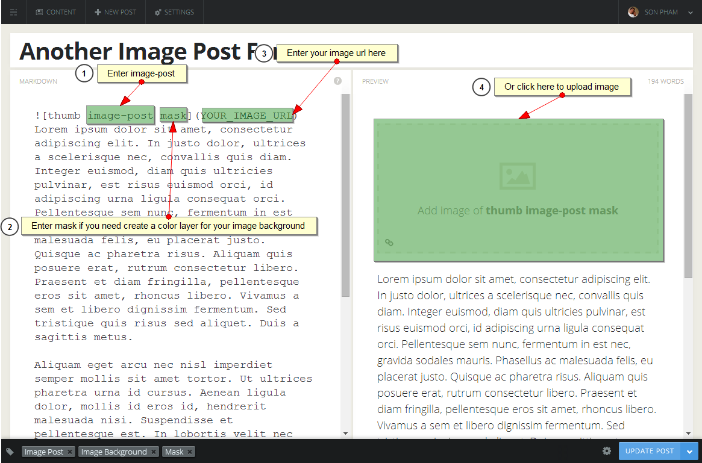
+ With Ghost 0.5.2, you can easy choose Image for your Post on Post Setting Panel.
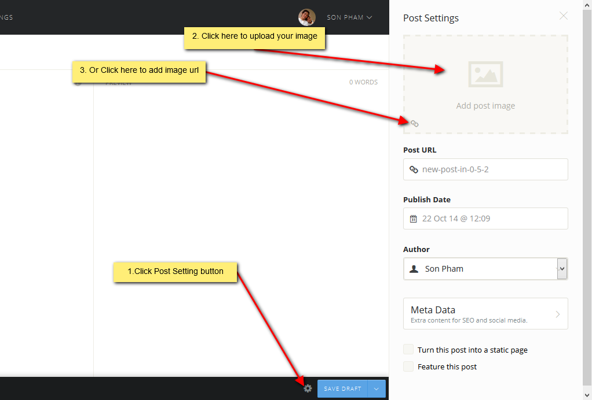
-
Audio Post Format (Support soundcloud)
+ Put soundcloud url [](YOUR_SOUNDCLOUD_URL_HERE) in the top of post
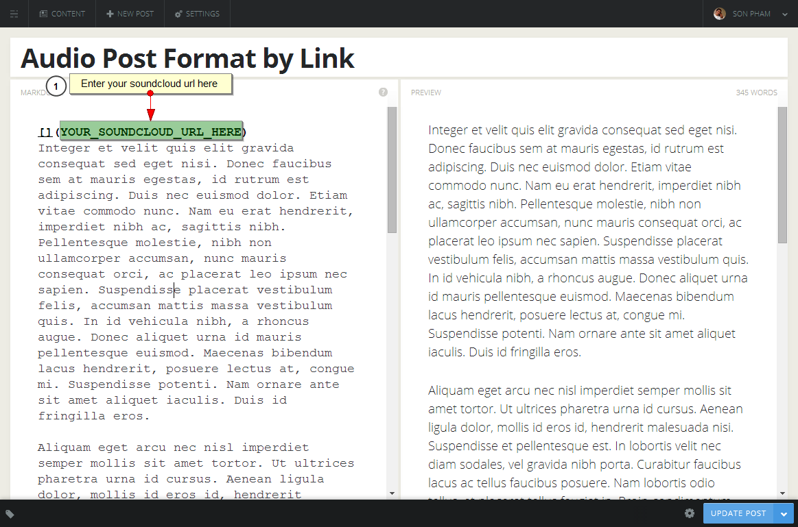
+ OR put soundcloud embed code in the top of post
<iframe height="166" src="https://w.soundcloud.com/player/?url=https://api.soundcloud.com/tracks/104708200"></iframe>
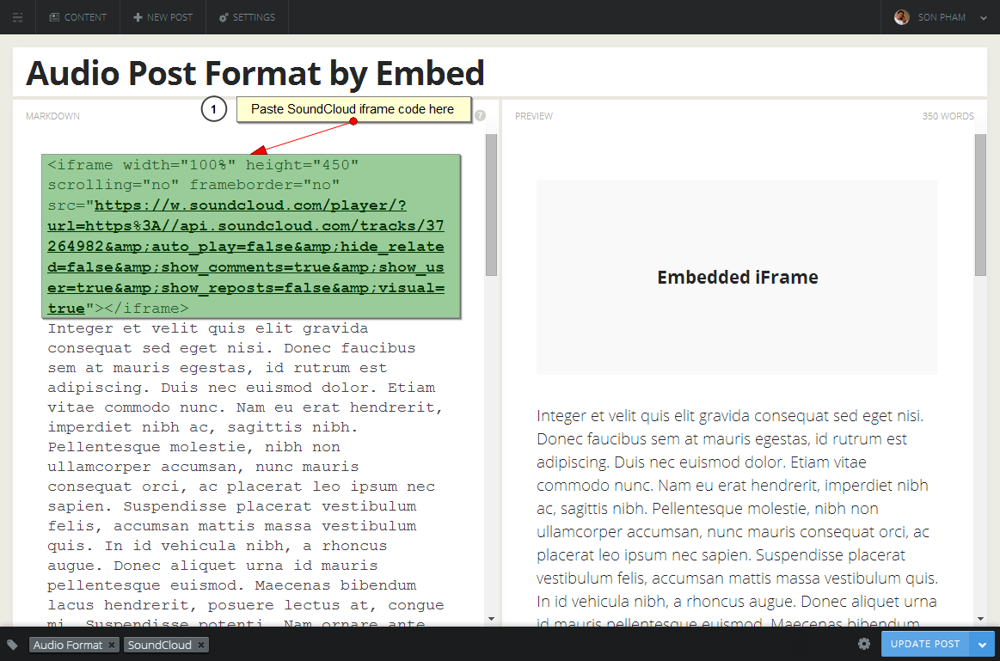
+ With Ghost 0.5.2, you can easy choose Image for your Post on Post Setting Panel.
-
Video Post Format (Support Vimeo and Youtube)
+ Put soundcloud url [](YOUR_VIMEO_OR_YOUTUBE_URL_HERE) in the top of post
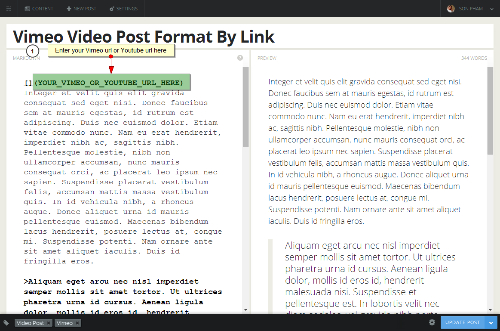
+ OR put vimeo embed code or youtube embed code in the top of post
<iframe width="560" height="315" src="//www.youtube.com/embed/aeLTx-ZhlFQ"></iframe>
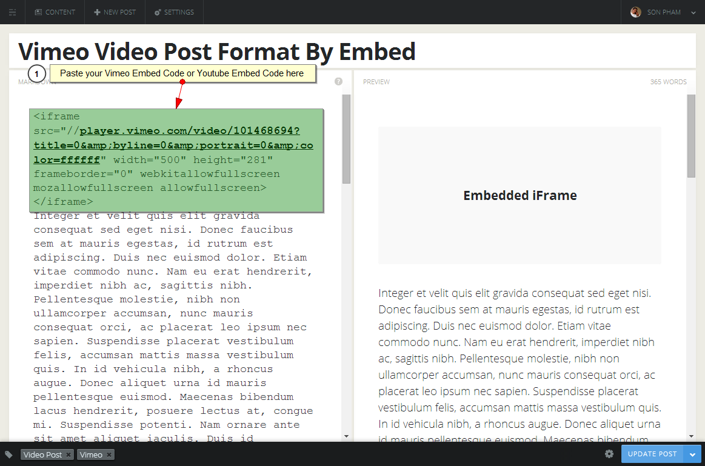
7. Using Shortcodes
At present Goblin only support html shortcode from BootStrap Framework. Check out this link, copy short code and paste to post content area.
8. Custom Theme
File: assets/css/custom.css
Add your custom styles here instead of screen.css so it is easier to update your theme. Simply copy an existing style from screen.css to this file, and modify it to your liking.
9. Update
9.1 File & Folder Changes:
= [Modify] /theme/redefine/style3/goblin/partials/loop.hbs
9.2 Update Steps:
-
Backup files:
On your server, backup all [Modify] files of Change logs list above.
-
Upload new files:
Upload all [Modify] files of Change log list above from themeforest download package to your server with overwrite option.
-
Re-config your last customize files (from v1.1):
Re-mix your last customize from backup files if you have made change it from v1.1.
We tread on the heels of Ghost. If you need any extra or feature just email us and we will include it in the next update.
10. Credits
10.1 Javascript
Goblin uses several scripts many of which are documented within the theme's code. If you're a developer, you will find this particularly useful.
10.2 Images
Images showed on preview files are from pixabay.com and subtlepatterns.com. Being designed with multipurpose attitude in mind, we showed some images on our preview files so you can have an idea what can be accomplished. Not a single image file is included with the download, they were just for demo purposes due to copyright.
10.3 Fonts
- Google Fonts - http://www.google.com/webfonts
- Font Awesome - http://fortawesome.github.com/Font-Awesome/
Once again, thank you so much for purchasing this theme. As We said at the beginning, We'd be glad to help you if you have any questions relating to this theme. Please contact us via email or social media. We'll do our best to assist!